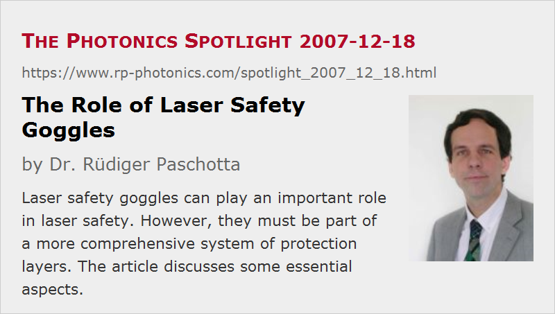

The Role of Laser Safety Goggles
Posted on 2007-12-18 as a part of the Photonics Spotlight (available as e-mail newsletter!)
Permanent link: https://www.rp-photonics.com/spotlight_2007_12_18.html
Author: Dr. Rüdiger Paschotta, RP Photonics Consulting GmbH
Abstract: Laser safety goggles can play an important role in laser safety. However, they must be part of a more comprehensive system of protection layers. The article discusses some essential aspects.

Ref.: encyclopedia articles on laser safety and eye protection; The Photonics Spotlight 2007-07-06
Laser safety goggles are frequently used means for eye protection against laser hazards. They can function as one of the corner stones for laser safety. However, their role in this context is often poorly reflected. Therefore, it seems appropriate to make some comments.
Maintaining the visual abilities of workers or researchers in some environment is a goal which is so important that a high level of reliability is essential. That is achieved only by employing multiple layers of protection, providing some level of redundancy which guarantees safety even if one layer fails for some reason. This is the most basic reason why safety goggles can only represent one of several required safety measures.
The limited reliability of safety goggles alone is quite obvious. A strong laser beam, such as from machinery for laser cutting and welding, can easily destroy safety glasses. The same holds for intense pulses from a Q-switched laser; a single shot may make a protection glass crack, and at least the next shot then hits the eye without protection. Furthermore, a laser beam may come from the rear and be partially reflected at the safety glasses, so that some light gets into the eye. There may also be a laser beam at a wavelength against which the glasses provide no protection; particularly in laboratories, where the involved wavelengths are changing quite often, I wouldn't trust that all work is halted until fully safe glasses arrive. Even if the right glasses are available, a worker may accidentally get the wrong ones. Finally, at some places there is the terrible influence of so-called experienced laser users who ridicule those who are concerned about their safety and that of others (see The Photonics Spotlight 2007-07-06). This may lead to people working without the glasses in front of their eyes – regulations alone don't guarantee that this won't happen.
Of course, the chances that laser goggles are used can be improved. The probably best way to achieve this is to provide really suitable goggles. This requires a little more thought than one might expect, as there are several compromises which need to be adapted to the concrete circumstances. For example, the technically safest glasses tend to be heavy and uncomfortable, while very lightweight ones may not provide sufficient safety.
Concerning redundancy, a reasonable approach is to start where the hazard arises: as close as possible to the laser source, one tries to prevent laser radiation from spreading any further than absolutely required. This works fine in many industrial environments, but less so in laboratories, as the flexibility can be greatly reduced. Nevertheless, even there it is possible to strongly reduced risks by installing proper shields, send some beam through tightly fixed blackened metal rods, etc. As this alone is also for sure not perfectly safe, one can use safety goggles to essentially eliminate the residual risk. Even if they cannot protect against the full power of the original beam, they are then usually sufficient to protect against parasitic reflections, which would still be by far sufficient to destroy an eye.
Redundancy is essential, but it unfortunately also doesn't work as nicely as it should do in principle. This is because people are aware of it and consequently think that there is enough redundancy to omit this or that layer of safety measures when it is not convenient. We are familiar with that from the context of driving, where e.g. the introduction of anti-lock braking system (ABS) didn't have the expected impact on collision rates due to “risk compensation”: some drivers started to drive less safely, believing that ABS would rescue them. In reality, the driving risks grow so quickly with increasing speed that it doesn't take much to overcompensate the beneficial effects of ABS or whatever safety equipment. Similar things occasionally happen in nuclear power stations, where it is apparently hard to convince all workers that redundancy is not a sufficient reason for violating safety rules.
Perfect safety is impossible to obtain, but at least we can find a reasonable safety level by employing a well thought-through system of safety measures and by occasionally reflecting the essential aspects. I hope that this article helps to safe a few eyes!
This article is a posting of the Photonics Spotlight, authored by Dr. Rüdiger Paschotta. You may link to this page and cite it, because its location is permanent. See also the RP Photonics Encyclopedia.
Note that you can also receive the articles in the form of a newsletter or with an RSS feed.
Questions and Comments from Users
Here you can submit questions and comments. As far as they get accepted by the author, they will appear above this paragraph together with the author’s answer. The author will decide on acceptance based on certain criteria. Essentially, the issue must be of sufficiently broad interest.
Please do not enter personal data here; we would otherwise delete it soon. (See also our privacy declaration.) If you wish to receive personal feedback or consultancy from the author, please contact him e.g. via e-mail.
By submitting the information, you give your consent to the potential publication of your inputs on our website according to our rules. (If you later retract your consent, we will delete those inputs.) As your inputs are first reviewed by the author, they may be published with some delay.
|  |
If you like this page, please share the link with your friends and colleagues, e.g. via social media:
These sharing buttons are implemented in a privacy-friendly way!